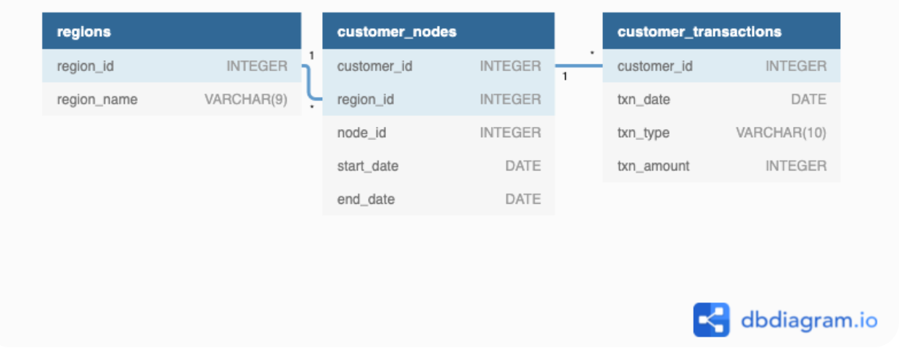
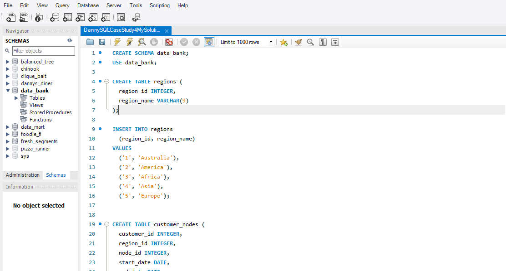
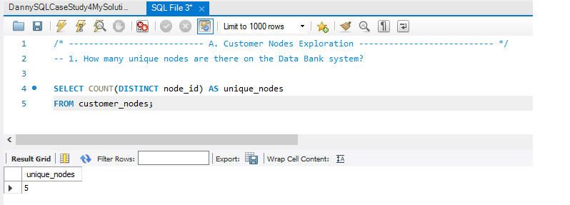
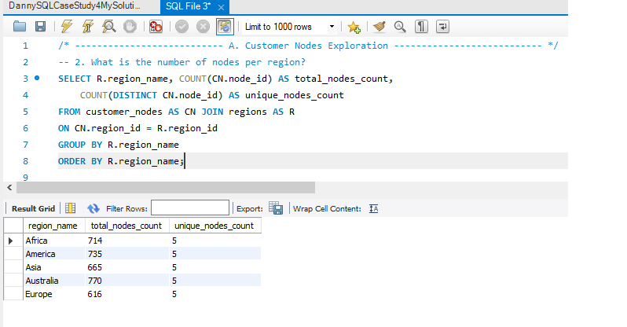
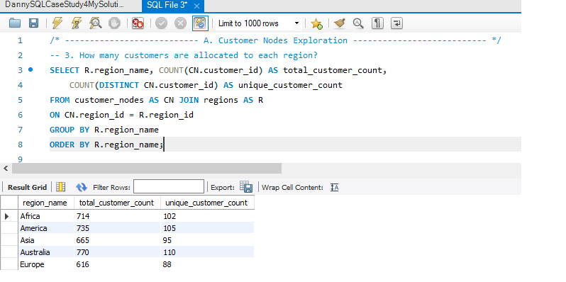
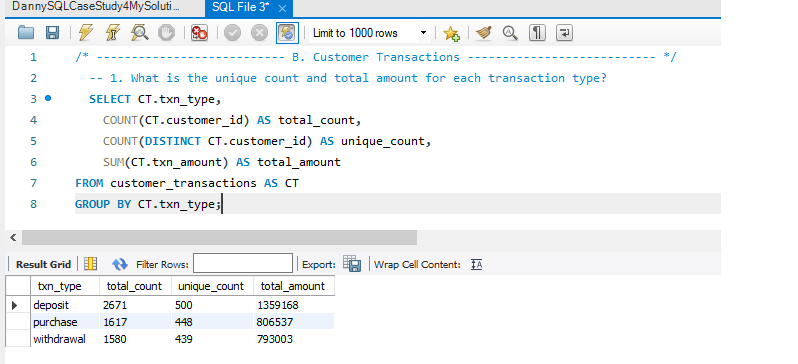
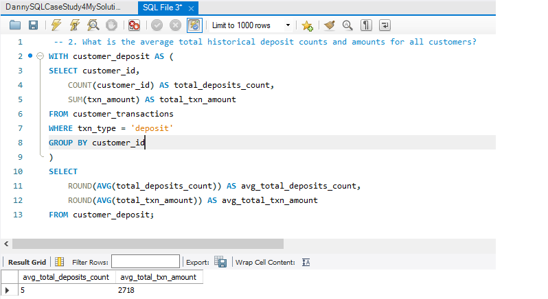
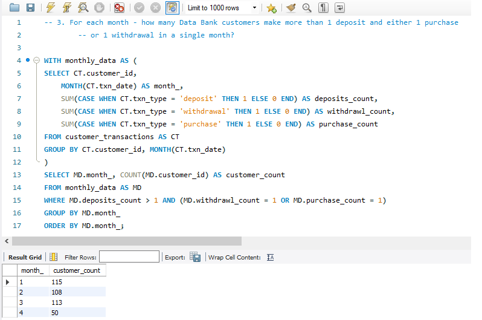

Introduction
There is a new innovation in the financial industry called Neo-Banks: new aged digital only banks without physical branches.
Danny thought that there should be some sort of intersection between these new age banks, cryptocurrency and the data world…so he decides to launch a new initiative - Data Bank!
Data Bank runs just like any other digital bank - but it isn’t only for banking activities, they also have the world’s most secure distributed data storage platform!
Customers are allocated cloud data storage limits which are directly linked to how much money they have in their accounts. There are a few interesting caveats that go with this business model, and this is where the Data Bank team need your help!
The management team at Data Bank want to increase their total customer base - but also need some help tracking just how much data storage their customers will need.
This case study is all about calculating metrics, growth and helping the business analyse their data in a smart way to better forecast and plan for their future developments!
Available Data
The Data Bank team have prepared a data model for this case study as well as a few example rows from the complete dataset below to get you familiar with their tables.

Table 1: Regions
Just like popular cryptocurrency platforms - Data Bank is also run off a network of nodes where both money and data is stored across the globe. In a traditional banking sense - you can think of these nodes as bank branches or stores that exist around the world.
This regions table contains the region_id and their respective region_name values
| region_id | region_name |
|---|---|
| 1 | Africa |
| 2 | America |
| 3 | Asia |
| 4 | Europe |
| 5 | Oceania |
Table 2: Customer Nodes
Customers are randomly distributed across the nodes according to their region - this also specifies exactly which node contains both their cash and data.
This random distribution changes frequently to reduce the risk of hackers getting into Data Bank’s system and stealing customer’s money and data!
Below is a sample of the top 10 rows of the data_bank.customer_nodes:
| customer_id | region_id | node_id | start_date | end_date |
|---|---|---|---|---|
| 1 | 3 | 4 | 2020-01-02 | 2020-01-03 |
| 2 | 3 | 5 | 2020-01-03 | 2020-01-17 |
| 3 | 5 | 4 | 2020-01-27 | 2020-02-18 |
| 4 | 5 | 4 | 2020-01-07 | 2020-01-19 |
| 5 | 3 | 3 | 2020-01-15 | 2020-01-23 |
| 6 | 1 | 1 | 2020-01-11 | 2020-02-06 |
| 7 | 2 | 5 | 2020-01-20 | 2020-02-04 |
| 8 | 1 | 2 | 2020-01-15 | 2020-01-28 |
| 9 | 4 | 5 | 2020-01-21 | 2020-01-25 |
| 10 | 3 | 4 | 2020-01-13 | 2020-01-14 |
Table 3: Customer Transactions
This table stores all customer deposits, withdrawals and purchases made using their Data Bank debit card.
| customer_id | txn_date | txn_type | txn_amount |
|---|---|---|---|
| 429 | 2020-01-21 | deposit | 82 |
| 155 | 2020-01-10 | deposit | 712 |
| 398 | 2020-01-01 | deposit | 196 |
| 255 | 2020-01-14 | deposit | 563 |
| 185 | 2020-01-29 | deposit | 626 |
| 309 | 2020-01-13 | deposit | 995 |
| 312 | 2020-01-20 | deposit | 485 |
| 376 | 2020-01-03 | deposit | 706 |
| 188 | 2020-01-13 | deposit | 601 |
| 138 | 2020-01-11 | deposit | 520 |
Interactive SQL Instance
The Dataset for this case study can be accessed from here. I will be using MySQL to solve this case study. In order to solve yourself this case study, simply go to the above link and choose MySQL Dialect (version > 8, if using MySQL version higher than 8 locally), copy & paste the Database schema into MySQL.
Here is the snapshot of it.

Case Study Questions
The following case study questions include some general data exploration analysis for the nodes and transactions before diving right into the core business questions and finishes with a challenging final request!
A. Customer Nodes Exploration
- How many unique nodes are there on the Data Bank system?
- What is the number of nodes per region?
- How many customers are allocated to each region?
- How many days on average are customers reallocated to a different node?
- What is the median, 80th and 95th percentile for this same reallocation days metric for each region?
B. Customer Transactions
- What is the unique count and total amount for each transaction type?
- What is the average total historical deposit counts and amounts for all customers?
- For each month - how many Data Bank customers make more than 1 deposit and either 1 purchase or 1 withdrawal in a single month?
- What is the closing balance for each customer at the end of the month?
- What is the percentage of customers who increase their closing balance by more than 5%?
C. Data Allocation Challenge
To test out a few different hypotheses - the Data Bank team wants to run an experiment where different groups of customers would be allocated data using 3 different options:
- Option 1: data is allocated based off the amount of money at the end of the previous month
- Option 2: data is allocated on the average amount of money kept in the account in the previous 30 days
- Option 3: data is updated real-time
For this multi-part challenge question - you have been requested to generate the following data elements to help the Data Bank team estimate how much data will need to be provisioned for each option:
- running customer balance column that includes the impact each transaction
- customer balance at the end of each month
- minimum, average and maximum values of the running balance for each customer
Using all of the data available - how much data would have been required for each option on a monthly basis?
D. Extra Challenge
Data Bank wants to try another option which is a bit more difficult to implement - they want to calculate data growth using an interest calculation, just like in a traditional savings account you might have with a bank.
If the annual interest rate is set at 6% and the Data Bank team wants to reward its customers by increasing their data allocation based off the interest calculated on a daily basis at the end of each day, how much data would be required for this option on a monthly basis?
Special notes:
- Data Bank wants an initial calculation which does not allow for compounding interest, however they may also be interested in a daily compounding interest calculation so you can try to perform this calculation if you have the stamina!
Extension Request
The Data Bank team wants you to use the outputs generated from the above sections to create a quick Powerpoint presentation which will be used as marketing materials for both external investors who might want to buy Data Bank shares and new prospective customers who might want to bank with Data Bank.
Using the outputs generated from the customer node questions, generate a few headline insights which Data Bank might use to market it’s world-leading security features to potential investors and customers.
With the transaction analysis - prepare a 1 page presentation slide which contains all the relevant information about the various options for the data provisioning so the Data Bank management team can make an informed decision.
Let’s start solving
A. Customer Nodes Exploration
1. How many unique nodes are there on the Data Bank system? 
2. What is the number of nodes per region? 
3. How many customers are allocated to each region? 
4. How many days on average are customers reallocated to a different node?
5. What is the median, 80th and 95th percentile for this same reallocation days metric for each region?
B. Customer Transactions
1. What is the unique count and total amount for each transaction type? 
2. What is the average total historical deposit counts and amounts for all customers? 
3. For each month - how many Data Bank customers make more than 1 deposit and either 1 purchase or 1 withdrawal in a single month? 
4. What is the closing balance for each customer at the end of the month?
5. What is the percentage of customers who increase their closing balance by more than 5%?
C. Data Allocation Challenge
To test out a few different hypotheses - the Data Bank team wants to run an experiment where different groups of customers would be allocated data using 3 different options:
- Option 1: data is allocated based off the amount of money at the end of the previous month
- Option 2: data is allocated on the average amount of money kept in the account in the previous 30 days
- Option 3: data is updated real-time
For this multi-part challenge question - you have been requested to generate the following data elements to help the Data Bank team estimate how much data will need to be provisioned for each option:
- running customer balance column that includes the impact each transaction
- customer balance at the end of each month
- minimum, average and maximum values of the running balance for each customer
Using all of the data available - how much data would have been required for each option on a monthly basis?